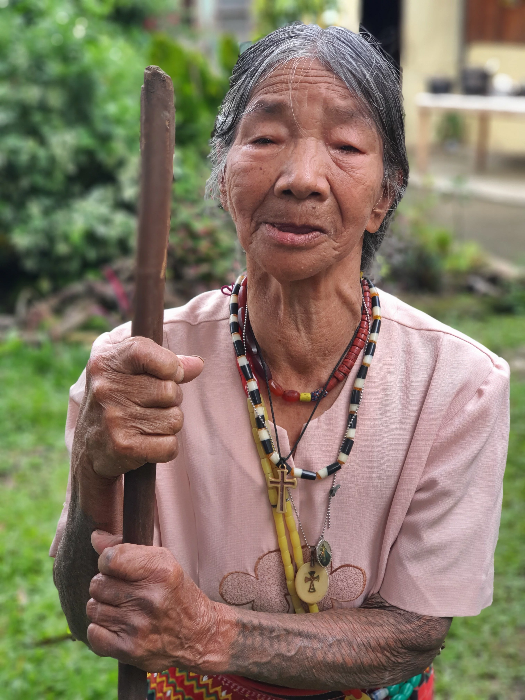

Deep into the highlands of Kalinga lies the quaint village of Sumadel. Almost forty years back, this village witnessed a killing that ignited what was then believed to be a seemingly enduring tribal war between the Sumadel Tribe and the Butbut Tribe. Boys from the latter were identified as the perpetrators of the assassination of incumbent Mayor Alexander Alñgag. This tragic incident elicited an immediate reaction of the Mayor’s son, Alexander Alñgag, Jr., killing Peter Gaddawan of Butbut in Tuguegarao, Cagayan in mid-1980.
In Bodong, it is a cardinal norm that the peace pact is automatically severed once a killing or patoy is committed against a member of a kabodong (tribe with which the other tribe forged a peace pact). What normally ensues after the severance is a killing spree, where one tribe aims to score evenly against the other.
This is exactly what happened between Sumadel and Butbut. The members of each tribe lived in constant danger as they were all rendered vulnerable to the vengeful acts of some of the members of the opposite tribe. Indeed, during the period following the severance of the Bodong, retribution and bloodshed supervened. This took place despite the presence of military elements in the municipality of Tinglayan, where Butbut and Sumadel are situated.
Besides, during the precarious period, tribe members who were working as government employees were forced to take a leave for two years for fear of losing their lives in the course of the tribal war. Others sought refuge in distant places. Children and youths were also not allowed to go to school as they were likewise susceptible to the violence of the tribal war.
Because of the worsening situation, the Office of the Provincial Governor of Kalinga had to intervene. Agustus Saboy, who was then the Provincial Administrator, was sent to Tinglayan to persuade the two tribes to negotiate and restore the peace pact. While the two tribes gave negotiation a chance, the atmosphere was overwrought.
As the negotiation was transpiring, the rest of the members of the Sumadel Tribe were anxious and in full anticipation. Many were profusely hoping that the peace pact will be restored. Among them was the late mayor’s older sister, Carina Alñgag Chulsi. For Carina, her tribe has already seen enough bloodshed and it was time for killings and other forms of violence to end as many lives have been stunted, including that of the younger generations of her tribe. Although she was still grieving over the loss of her younger brother, she knew that time has come for her tribe to restore the Bodong with the Butbut Tribe in order for the lives of everyone to go back to normal and for their children to be given the chance to go to school again.
The negotiations, however, proved to be difficult. Aside from irreconcilable terms and conditions being proffered by both tribes, the elders or the papangat of Sumadel were having a hard time identifying who would hold the Bodong. Apparently, none from the elders and other Sumadel males from Mayor Alñgag’s clan wanted to become the Bodong holder as they were afraid that they will not be able to carry the responsibility or control the members of the clan who were still bent to choose retribution over reconciliation. Many were frightened to take on the task since being a Bodong holder is not simply a social distinction, but it also implies a precarious social status and may mean life itself.
On the third day of negotiation, Carina went to the rice fields with another woman to attend to their crops. When rains began pouring, Carina and her companion decided to go back home. Suddenly, the sky cleared up and an odd and scorching heat donned on the wide rice fields. Then Carina saw a group of men who were making their way out of Sumadel. She noticed that these were the elders of the Butbut Tribe. She hastily approached the group to ask why they are already leaving when the negotiation is still on going, to which the group retorted that no one among the males of her tribe wanted to hold the Bodong so it was futile for them to continue negotiating.
Frustrated of what she just heard, and determined to restore peace between the two tribes, Carina right there and then decided to hold the Bodong. She immediately headed back to her village and announced that she will hold the peace pact. While it came as a surprise to her family, Carina’s decision was however embraced by them considering that this will mean a great deal to both Sumadel and Butbut Tribes, whose members have been longing to see a day where they can live their lives free from fear and worry.
Negotiations then lasted for a few more days to settle the pagta or the rules of the Bodong, and as in other Bodong celebrations, a feast followed the successful negotiation. However, since trust has not yet been fully restored, members of the Butbut Tribe had to demand that they be given unbreakable objects before they could partake in the meals prepared by the Sumadel Tribe. It is a common belief that this would dispel any curse that they might get from eating the food. To show that they are sincere, members of the Sumadel Tribe allowed the Butbut Tribe to take with them cauldrons, cast iron pots and other metal objects.
Unbeknownst to Carina then, her extraordinary courage and resolute stance to revive a very expensive peace had made her the first woman peace pact holder, not only of Kalinga, but also of the whole Gran Cordillera. Petite as she physically stands, her valor, conviction, and strength of character are bigger than anyone could ever imagine. Carina personifies an empowered woman, who is ever ready to make big sacrifices if only to give her tribe members the peaceful and secure life that they deserve. Carina has become the source of inspiration for many people in her tribe, including her own beloved children. For her daughter Juanita, Carina has proven that in Bodong and elsewhere in life, women are not consigned to the kitchen. Women play enormous roles in conflict resolution and achieving peace. They possess assets and skills that are valuable in negotiating and restoring amity. They are cool-headed and could adjust in almost all situations since they can control their minds and emotions. In addition, when women speak amidst a pool of men, the latter would almost always lend their ears to the former as Kalinga men accord women great respect.
Indeed, Carina has trail-blazed the path to Kalinga women’s meaningful participation in Bodong. Her outstanding feat as the first woman peace pact holder heralded an era where Kalinga women can assert themselves in decision-making as regards socio-political issues that affect their lives and well-being. For that reason, Carina is deemed by many as legendary.
Today, Carina’s son, Ferdinand, is the holder of the Bodong that she has so gallantly fought for in the name of peace. Asked how he feels about her mother’s feat, Ferdinand responded with a brimming pride in his eyes. For him, what his mother did was a great act of sacrifice and an immense display of courage, and as his tribe’s current peace-pact holder, it is his joy to emulate and continue his mother’s gallantry. Being a Bodong holder is a huge responsibility, but Ferdinand sees his position as an opportunity to be of true service to his people and his tribe, and for him, there is no greater honor.
31 October 2021